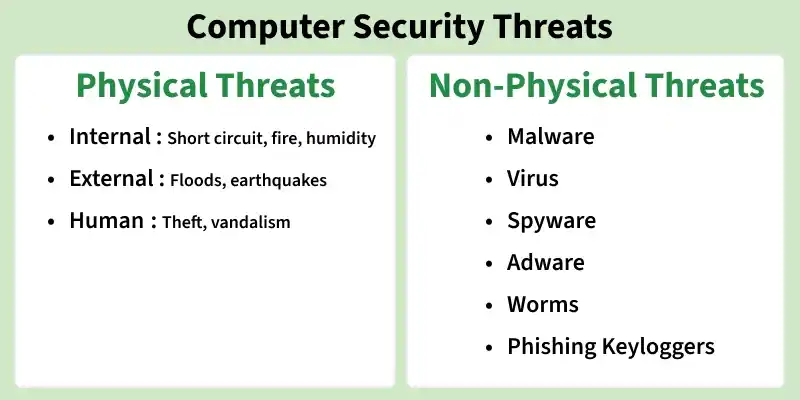
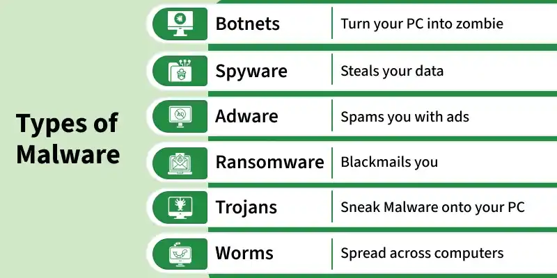
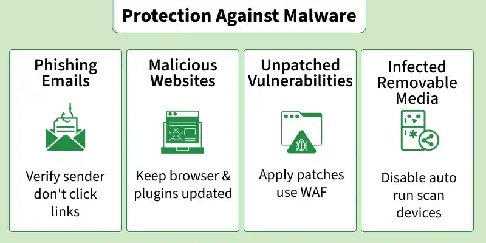

Computer Security is the practice of protecting computer systems, networks, and data from theft, damage, or unauthorized access. Just as you lock the door to your house, you need to secure your computer from digital threats.

Malware (short for Malicious Software) is any program designed to harm, exploit, or gain unauthorized access to systems. It is the most common non-physical threat.

A harmful program that attaches itself to legitimate files. When the file is opened, the virus runs and can spread to other files, corrupting or deleting data.
Self-replicating software that spreads automatically across networks without you doing anything. It slows down systems by using up memory and bandwidth.
Malware disguised as a useful or fun program (like a game). Once you install it, it creates a "backdoor" for hackers to control your system.
Locks your screen or encrypts your files so you can't access them, then demands a money payment (a ransom) to unlock them.
Secretly monitors your computer activities, tracking what you type (keyloggers) to steal passwords and bank details.
Displays unwanted, annoying pop-up advertisements on your screen and tracks your browsing habits.
You can significantly reduce the risk of malware and hacking by following these basic safety measures:
